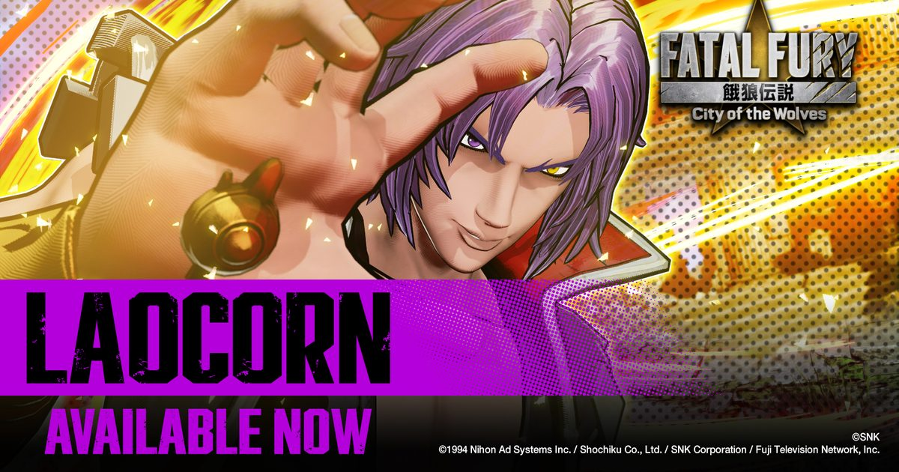

2026-11-19 · 格斗游戏深读

11 月 19 日，劳康·高迪亚姆斯进了《饿狼传说：群狼之城》的角色表。这个名字对绝大多数人来说是陌生的—— 他不是游戏角色，是 1994 年那部动画电影《饿狼传说 THE MOTION PICTURE》里的反派， 三十二年前只在大银幕上活过一次。SNK 顺手请回当年执导该片的大张正己，拍了一支动画短片， 再把整部剧场版的精华剪辑免费放出来。
中文圈的讨论基本停在「SNK 开始挖坟了」。但如果只把这当成一条情怀新闻，会错过真正有意思的部分： 这不是一次角色更新，是一份季票结构的自白书。 季票 3 七个席位，本家角色三个，外来 IP 四个；同期本体价格从 59.99 美元永久砍到 19.99， 促销期还能叠到 4.99。三条线同时拉，说明它现在缺的不是角色，是人。
先把设定摆清楚。劳康是高迪亚姆斯家族的末裔，与双胞胎妹妹苏莉亚同为古代战士的直系血脉， 带着「三巨头」满世界找那套传说中的火星铠甲，目的是让自己超越人类、升格为神。 当他查到铠甲的最后一块被当作 KOF 大赛的奖品时，就亲自下场参赛了—— 这就是他进入《群狼之城》的剧情理由。日语配音三木真一郎，英语 Branden Loera； 妹妹苏莉亚的英配是 Erica Mendez。
参战待遇给得不算敷衍：专属街机模式剧情、EOST（南镇故事）里的独立篇章，外加那支大张正己执导、 Studio G-1 Neo 制作的动画短片。这家工作室和大张本人前面已经给本作做过几支动画预告， KOF XV 时期也是同一套班子——SNK 现在把「动画短片」当成了固定规格的营销件， 不是临时起意的宣传物料。
但这里有个细节值得停一下：劳康此前从未在《饿狼传说》或 KOF 的游戏正史里登场过。 他唯一的出处是那部剧场版——一部设定上独立于游戏时间线、把「火星铠甲」这种神话道具塞进南镇的动画电影。 现在 SNK 把他做进正传续作，还配了完整的 EOST 剧情，等于官方在说： 1994 年那部电影的设定，是可以被采信的。
顺带说清版权结构上的区别。劳康不是「联动」——剧场版当年由松竹、富士电视台、NAS 和 SNK 联合制作， 版权行里 SNK 自己是署名方之一。所以他属于自有 IP 的再开发， 拿他出来几乎不产生授权成本。而同一张季票里的万次郎与阿坚要付讲谈社与动画制作委员会的钱， 十二月那位来自《铁拳 8》的蕾娜要付万代南梦宫的钱。三种成本、三种含金量，被塞进同一个 19.99 美元的包里。
把 S3 完整排期拉出来，结构一目了然： 7 月 23 日瑞克·斯托德、8 月 27 日达克·金、9 月 24 日金家藩、 10 月 22 日佐野万次郎与龙宫寺坚同日上线、11 月 19 日劳康、12 月蕾娜。
七席里，瑞克·斯托德、达克·金、金家藩是《Real Bout》时代的老面孔；万次郎与阿坚是《东京复仇者》； 劳康是剧场版；蕾娜是《铁拳 8》。也就是说，这一整季没有推出任何一个全新的饿狼角色。 往前看也一样：季票 1 里塞了肯与春丽（街霸），季票 2 里塞了拳四郎（北斗神拳）。 三季十八个 DLC，外来 IP 占了三成多，而本家那一侧全靠九十年代的角色库在撑。
这不是指责，是一个必须承认的产能事实：SNK 现在没有能力在一个赛季里造出七个能让老玩家认账的新角色。 造一个新角色要设计、要测试、要写进世界观、要平衡，成本远高于从版权库里捞一个现成的。 而捞现成的还自带流量——蕾娜一个人能带来的话题，可能比三个新角色加起来都多。
劳康的特殊之处在于他站在两种策略的交叉口：他是自己家的老资产，但知名度和「外来联动」差不多低。 选他，等于是用外来联动的结构，去干一次低成本的考古。 这步棋很聪明，也很悲凉——它说明连「情怀」这件事，SNK 都只能从三十年前的仓库里找。
同一天的新闻里还藏着两个更重要的数字，中文报道基本没提：本体永久降价，以及一年前那次免费大更新。
第一条绳是降价。本作 2025 年 4 月发售时，标准版 59.99 美元（含季票 1）。 现在标准版单独卖 19.99，季票 1 拆出来卖 14.99，季票 2 是 19.99，季票 3 也是 19.99， 打包三个季票加本体的「复仇版」49.99。眼下还在做促销——标准版打到 4.99， 也就是原价的 8%，一直持续到 11 月 21 日 07:59 UTC。
第二条绳是免费内容。一周年那次更新塞进了「狼之命运」（Wolves' Destiny）—— 系列史上第一个真正意义上的剧情模式，全语音、日英双语、一万五千多字台词、一百五十张原创插图， 剧情接在街机模式与 EOST 结局之后，自己还有分支与多结局。同时把《Real Bout》时代的 Ring Out （把人打出屏幕直接判胜）搬了回来，加了新舞台，重做了整个 UI。
第三条绳就是角色拼盘。街霸、北斗、东京复仇者、铁拳、九四剧场版，五个外部世界轮着进。
三条绳单看都对，一起拉就出问题了。降价拉来的是「试试看的人」，联动角色卖给的却是「已经在玩的人」。 一个花 4.99 买本体的新玩家，几乎不可能在同一个月再掏 19.99 买季票 3—— 他连基础连段都还没练熟。而冲着蕾娜来的铁拳玩家，买完一个角色、打完几场、 发现自己在《群狼之城》里连防反都按不出来，下个月就走了。 低价买来的人口，和授权角色想变现的人口，根本不是同一批人。
Steam 上的数字很直白。本作同时在线峰值 4,674 人，现在长期在两百人出头徘徊。 媒体评分并不难看（Metacritic 80），口碑也不算崩，但销量没达到预期， 以至于 SNK 的 CEO 在发售后转任了别的岗位。一款评价不差的格斗游戏，人口会掉到这个量级，说明问题不在品质。
格斗游戏有个别品类没有的死结：它的核心体验需要对手，而新手进来遇到的第一个对手，通常已经练了半年。 这不是匹配算法能解决的，因为池子里根本不够人。 价格能降低进门的门槛，却改变不了「进门之后三分钟被连死十次」的体验。 4.99 能买来第一次启动，买不来第十次启动。
真正对症的是第二条绳。剧情模式之所以对格斗游戏重要，不是因为它好玩， 而是因为它给「不想打线上的人」一个合法的留存理由。 街霸 6 的世界巡游、铁拳 8 的剧情模式，本质都是同一件事：先把人留在游戏里， 让他每天开机，让他慢慢从单机滑向联机。一万五千字全语音的剧情， 在格斗游戏里算是很重的投入——但它出现在发售一年半之后。
这就是我觉得最可惜的地方。如果「狼之命运」是首发内容，4674 这个峰值不会是那个数字。 首发期的口碑空转，是后面所有降价和联动都补不回来的。 一年后再补，补的是留存，不是口碑。
我们的观察：劳康这个角色的完成度高于他应有的待遇。 他不是把剧场版的模型搬进游戏就完事——专属街机剧情、EOST 篇章、大张正己的短片， 三件套齐全。SNK 对待「自己家的老东西」比对待「别人家的新东西」更用心， 这在商业上说不通，但在创作上说得通：这部剧场版是他们自己参与做出来的，有感情。
我们的观点：季票不该再按「七个角色」卖了。 季票 3 里三个本家、两个漫画、一个剧场版、一个别家游戏，四类东西混在一个价格里， 玩家没法按需购买，SNK 也没法按价值定价。 更合理的做法是拆成「本家角色包」和「联动角色包」分开卖—— 冲着蕾娜来的人不必为达克·金付钱，认饿狼老班底的人也不必为铁拳买单。 把四种成本塞进一个 19.99，最后是谁都不满意。
我们的案例对比：拿街霸 6 与铁拳 8 摆在旁边看。街霸 6 走的是「60 美元本体 + 25 美元季票 + 世界巡游」， 它敢卖这个价，是因为首发就有单人大内容；铁拳 8 是 70 美元 + 剧情模式，同理。 《群狼之城》选择用 19.99 换人口，但首发没有把单人大内容做进去， 于是变成了「便宜但空」——这是定价策略和内容节奏错位，不是内容本身不行。
我们的实验：算一笔很土的账。复仇版 49.99 含本体 + 三季十八个角色，人均 2.78 美元。 季票 3 单独 19.99 除以七个人，人均 2.86 美元。也就是说， 现在这个价格体系里，一个练了三十二年才重新登场的剧场版反派， 和一个刚刚在《铁拳 8》里出道的新角色，标价一模一样。 这个定价不区分授权成本、不区分制作投入、也不区分玩家想要谁—— 它只区分「有没有被打包」。
我们的评分理由：7.4 分评的是「劳康这次更新 + 整季的结构」，不是评游戏本体。 加分项：角色还原度极高，火星铠甲的视觉符号、三巨头的出场、剧场版的台词气质都接住了； 大张正己的短片是这一季最像「作品」的东西，Studio G-1 Neo 的手绘质感在现在的格斗游戏宣传里已经很少见； 免费放出剧场版精华剪辑这一手很聪明——它不是广告，是让你先去认识这个人，再决定要不要买。 扣分项：季票结构失衡，七席无一本家新角色，靠九十年代库存和外部授权硬撑； 定价体系不区分内容成本；而降价这件事本身，说明 SNK 已经承认靠内容拉不动人了。 一句话总结：这是把一个三十二年前的反派，做成了这一季最像样的一次更新—— 而这句话的另一面，是这一季只有这一次像样。
季票 3 还剩最后一个席位：来自《铁拳 8》的蕾娜，十二月上线。 本体促销 4.99 美元的价格持续到 11 月 21 日 07:59 UTC，各商店时间略有差异。 如果你只是想知道劳康值不值得买——他值得，但值得的是看那支短片和打一遍他的街机剧情， 而不是为了他重新练一套防反。